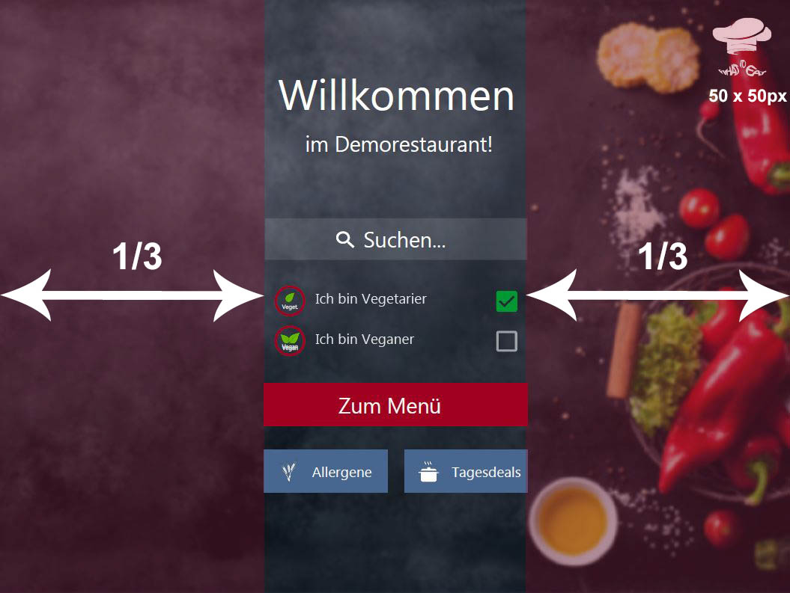

Welcome Screen Layout
The welcome screen, as well as any other screen representing restaurant-related information is split up into thirds. The margin on the left, as well as on the right site both have to be exactly one third of the total screen width. Furthermore, the buttons and input fields in the middle third have to fill up the available width completely.
The h1 heading is used to welcome guestes whereas the second heading indicates the name of the restaurant or facility.
Placing the Logo
The official What to eat logo is placed on the top right hand side with the following ruleset:
- Height and width: 50x50px
- Padding top and right: 1rem
